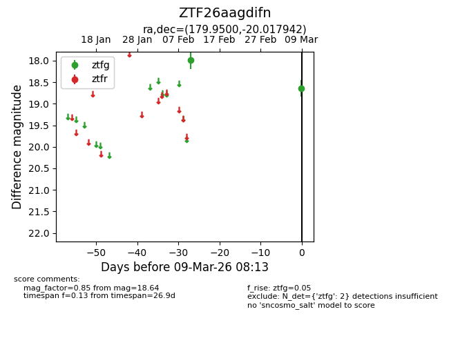
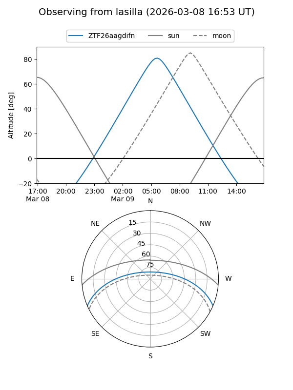
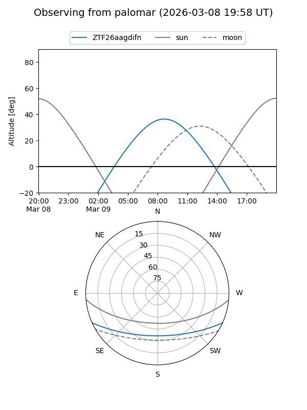

ZTF26aagdifn
Target ZTF26aagdifn at 2026-03-09 08:14
Aliases and brokers:
FINK: link
Lasair: link
ALeRCE: link
alt names
ZTF26aagdifn (ztf,fink_ztf)
Coordinates:
equatorial (ra, dec) = 179.9500,-20.01794
equatorial (HMS+DMS) = 11:59:48.00,-20:01:04.59
galactic (l, b) = (286.7263,+41.22319)
Flags:
Photometry:
last ztfg=18.64
2 ztfg detections
Lightcurve

Visibility


Additional plots